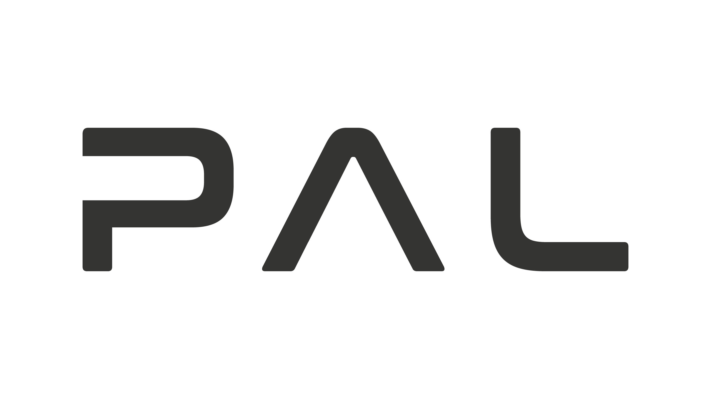

Who is behind ROS4HRI?
ROS4HRI is an open-source initiative driven by the robotics community.
Want to get in touch?
Want to get in touch, contribute, or propose new ideas for ROS4HRI? Open a discussion on the ROS4HRI GitHub organization.
Key Contributors

The project was initiated and is currently primarily maintained by Séverin Lemaignan.
PAL Robotics is a major contributor to the development of the ROS4HRI standard and its implementation, using it as the backbone for the HRI capabilities of their social robots (ARI, TIAGo).
Scientific publications
If you use ROS4HRI in your research, please cite the following papers:
Mohamed, Lemaignan, ROS for Human-Robot Interaction
Ros, Lemaignan, Ferrini, Andriella, Irisarri, ROS4HRI: Standardising an Interface for Human-Robot Interaction
Lemaignan, Ferrini, Probabilistic fusion of persons’ body features: the Mr. Potato algorithm
Lemaignan, Ferrini, Gebelli, Ros, Juricic, Cooper, Hands-on: From Zero to an Interactive Social Robot using ROS4HRI and LLMs
Alameda-Pineda et al., Socially Pertinent Robots in Gerontological Healthcare (first real-world deployment of a full autonomous robot using ROS4HRI)
Drop us a line if you want to see your research featured here!
Funding
The development of ROS4HRI has been supported by several European research projects, including:
SPRING (https://spring-h2020.eu/): Socially Pertinent Robots in Gerontological Healthcare
ARISE (https://arise-middleware.eu/): Open-Source, real-time middleware for Industrial Human-Robot Interaction
We are grateful for their support in advancing open-source human-robot interaction.